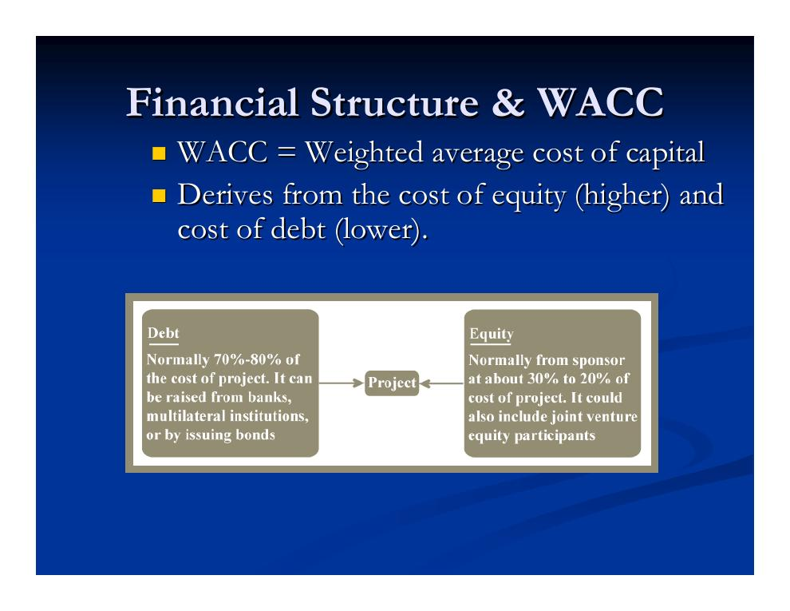
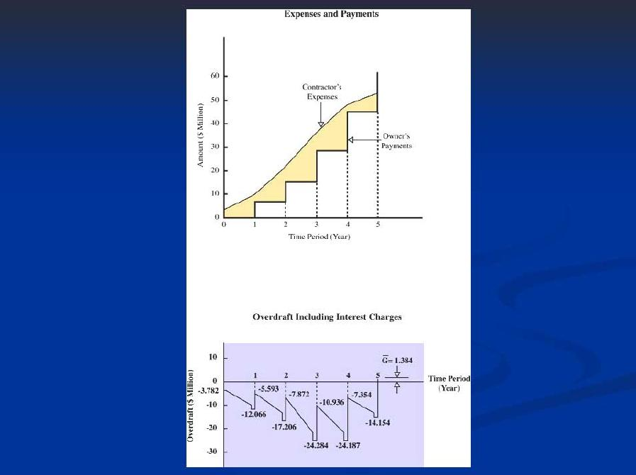

- Lernziele: Warum Finanzierung über Projekte entscheidet
- Wie finanziert der Bauherr? Öffentlich, privat, Projektfinanzierung
- Kreditvoraussetzungen und Nachweise gegenüber dem Kreditgeber
- Finanzierung aus Sicht des Bauunternehmers
- Weitere Aspekte: Latenter Kredit, Steuern, persönliche Haftung
- Zeitwert des Geldes und Barwert
- Kapitalwert (NPV) und Discounted-Cash-Flow-Methode
Lernziele: Warum Finanzierung über Projekte entscheidet
Diese Vorlesung verfolgt vier Lernziele: die Rolle der Projektfinanzierung verstehen, die Mechanismen der Projektfinanzierung kennen, Maße für die Vorteilhaftigkeit eines Projekts beherrschen – und die Annahmen durchschauen, die hinter diesen Bewertungsverfahren stehen.
Die Finanzierung ist dabei weit mehr als eine Formalie:
- Sie macht Projekte überhaupt erst möglich.
- Finanzierungsschwierigkeiten sind ein Haupttreiber hin zu alternativen Abwicklungsmodellen (Delivery Methods), weil diese Spielraum bei der Finanzierung durch den Bauherrn wie durch den Bauunternehmer schaffen.
- Sie beeinflusst maßgeblich das Risiko der Bauausführung, die Häufigkeit von Nachforderungen (Claims), die Art der Bauvorhaben, die überhaupt in Angriff genommen werden, und die Preise, die Bauunternehmer anbieten.
Wie finanziert der Bauherr? Öffentlich, privat, Projektfinanzierung
Für den Bauherrn gibt es drei grundsätzliche Wege, ein Projekt zu finanzieren: öffentliche Finanzierung, private Finanzierung und die sogenannte „Projektfinanzierung" über eine eigens gegründete Gesellschaft (häufig ein Joint Venture).
Öffentliche Finanzierung
- Mittelquellen: allgemeine oder zweckgebundene Anleihen, Steuereinnahmen, Investitionszuschüsse und Subventionen sowie zinsvergünstigte internationale Darlehen.
- Öffentliche Bauherren unterliegen Beschränkungen (z. B. Obergrenzen für die Anleiheverschuldung, „Bonding Caps") – ein Hauptmotiv für öffentlich-private Partnerschaften (Public-Private Partnerships).
- Kleine Bauvorhaben werden oft gebündelt, um die fixen Finanzierungskosten zu senken.
- Gesellschaftlicher Nutzen ist eine wichtige Rechtfertigung: Nutzervorteile (User Surplus), Vorteile für die Region, Lebensqualität, Beschäftigungswirkung.
- Wichtig ist zudem die Steuerbefreiung der öffentlichen Hand.
- Die Mindestverzinsung MARR (Minimum Attractive Rate of Return, siehe Begriffskasten unten) ist deutlich niedriger als bei privaten Bauherren (z. B. 10 %) und häufig standardisiert.
Private Finanzierung
Private Bauherren finanzieren über zwei Hauptmechanismen:
- Fremdkapital (Debt)
- Kreditaufnahme, einbehaltene Gewinne (Retained Earnings) sowie Anleihen in vielen Varianten: Einnahmenanleihen (Revenue Bonds), festverzinsliche Anleihen, Wandelanleihen, endfällige Anleihen („Balloon") u. a.
- Eigenkapital (Equity)
- Ausgabe von Geschäftsanteilen bzw. Aktien, z. B. am Kapitalmarkt. Investoren müssen mit einer ausreichend hohen Rendite angelockt werden – der Maßstab dafür ergibt sich aus dem Kapitalmarktmodell CAPM (Capital Asset Pricing Model).
Wegen der höheren Kosten und Risiken verlangen private Bauherren höhere Renditen: Die MARR ist je Unternehmen verschieden und oft hoch (z. B. 20 %).
Private Bauherren mit beleihbarem Bauwerk: zwei Finanzierungsphasen
Wenn das fertige Bauwerk als Sicherheit dienen kann, zerfällt die Finanzierung typischerweise in zwei klar getrennte Phasen, deren Darlehen oft als Paket verhandelt werden:
- Kurzfristige Finanzierung (Bauphase): riskant – und deshalb teuer. Hier fallen die großen Kosten an, die Sicherheiten sind unvollständig (allenfalls das Grundstück dient als Pfand). Das Geld wird geliehen, damit der Bauherr die Bauleistungen bezahlen kann.
- Langfristige Finanzierung (Nutzungsphase): Das fertige Bauwerk dient als Sicherheit; das Darlehen finanziert den Betrieb und löst die Baufinanzierung ab. Die Zinsen sind deutlich niedriger; bedient wird das Darlehen häufig aus Steuereinnahmen oder Projekterlösen.
Als Kreditgeber der Bauherren treten Sparkassen bzw. Bausparinstitute (Savings & Loan), Investmentbanken, Immobilien-Investmentgesellschaften (REITs) und Versicherungen auf. Ein innovativer Weg ist, sich das Geld faktisch „beim Bauunternehmer zu leihen", indem die Finanzierungslast auf ihn verlagert wird – so bei den Modellen BOT (Build-Operate-Transfer) und Turnkey (schlüsselfertige Übergabe). Die Risikoanalyse übernimmt typischerweise der Kreditgeber.
Die Finanzierungsstruktur bestimmt die Kapitalkosten des Projekts: Der WACC (Weighted Average Cost of Capital, gewichtete durchschnittliche Kapitalkosten) ergibt sich aus den – höheren – Eigenkapitalkosten und den – niedrigeren – Fremdkapitalkosten.

„Projektfinanzierung" über eine Projektgesellschaft
Bei der Projektfinanzierung im engeren Sinn wird in das Vorhaben über eine eigens gegründete Gesellschaft investiert, oft als Joint Venture mehrerer Parteien. Wegen der fixen Gründungskosten lohnt sich das vor allem für größere Projekte. Die Vorteile:
- Bilanzneutralität („off balance sheet"): Die Verbindlichkeiten belasten nicht die Bilanz der Muttergesellschaften.
- Risikobegrenzung für die Beteiligten.
- Wirksamere Steuervorteile (Tax Shields).
- Geringere Agenturkosten (Agency Costs), weil direkt in das Projekt investiert wird.
Bekannte Beispiele sind der Dulles Freeway, der Eurotunnel, Eurodisney und die Stadtautobahn von Bangkok. Voraussetzung ist, dass das Projekt eigenständig betrieben werden kann. Der zentrale Nachteil: Spannungen zwischen den beteiligten Interessengruppen.
- MARR (Minimum Attractive Rate of Return)
- Mindestverzinsung: der niedrigste Diskontsatz, den der Markt entsprechend den Risiken eines Projekts gerade noch akzeptiert. Öffentliche Bauherren: oft um 10 % und standardisiert; private Firmen: unternehmensspezifisch, oft um 20 %.
- WACC (Weighted Average Cost of Capital)
- Gewichtete durchschnittliche Kapitalkosten eines Projekts, gebildet aus den teureren Eigenkapital- und den günstigeren Fremdkapitalkosten.
Kreditvoraussetzungen und Nachweise gegenüber dem Kreditgeber
Kreditgeber prüfen drei allgemeine Voraussetzungen – im Englischen die „drei C":
- Charakter (Character): die Einstellung des Schuldners zur Rückzahlung,
- Kapazität (Capacity): die wirtschaftliche Fähigkeit zur Rückzahlung,
- Sicherheiten (Collateral): Vermögenswerte, die ersatzweise verwertet werden können.
Ziel der einzureichenden Unterlagen ist der Nachweis, dass die Einnahmen die Hypothekenschulden tragen können. Typische Dokumente:
- Jahresabschlüsse des Bauherrn (Gewinn- und Verlustrechnung, Bilanz),
- lastenfreier Grundstückstitel mit passender baurechtlicher Ausweisung (Zoning),
- Planungsunterlagen und Kostenschätzungen,
- Abstimmung der Konten für einbehaltene Gewinne,
- Marktstudien zum Nachweis der erwarteten Einnahmen,
- eine detaillierte Pro-forma-Rechnung der erwarteten Einnahmen und Ausgaben über die Laufzeit des Darlehens.
Finanzierung aus Sicht des Bauunternehmers
Auch der Bauunternehmer muss finanzieren – denn er geht in Vorleistung. Der Zahlungsplan gliedert die Vergütung in Teilbeträge und ist meist ein Kompromiss zwischen Unternehmer und Bauherr; der Architekt bescheinigt den Baufortschritt, und der Unternehmer beantragt die vereinbarten Abschlagszahlungen. In der Praxis gilt:
- Während der Bauzeit muss der Unternehmer häufig ein Defizit vorfinanzieren – das allerdings deutlich kleiner ist als die Gesamtkosten.
- Der Zahlungsplan bildet manche Kosten nicht ab (z. B. Geräte), und zwischen Leistung und Zahlungseingang können viele Monate liegen.
- Ein prozentualer Sicherheitseinbehalt (Retainage) ist Standard – teils gestaffelt, mit Änderung bei 50 % Fertigstellung.

Der Bauherr wiederum achtet auf zwei typische Angebotsmuster: vorgezogen kalkulierte Angebote (Front-End Loading – frühe Positionen werden überteuert, um schnell Liquidität zu erhalten) und unausgewogene Angebote (Unbalanced Bids). Zur Deckung seines Finanzbedarfs greift der Unternehmer auf Rücklagen zurück oder leiht bei Banken – wofür er ein geringes Risiko nachweisen muss. Manche Bauherren helfen dem Unternehmer, ein günstigeres Darlehen zu bekommen; umgekehrt unterstützen Unternehmer mitunter sogar die Finanzierung des Bauherrn.
Da der Bauherr wegen Sicherheiten, Größe und Stabilität meist bessere Kreditkonditionen erhält, werden manchmal Dreiecksvereinbarungen zwischen Unternehmer, Bauherr und Bank geschlossen: Die Bank bezahlt den Unternehmer nach Baufortschritt – der Unternehmer reicht monatlich Zahlungsantrag samt Fortschrittsbericht ein, der Bauherr stellt daraufhin den Abrufantrag („Draw Request") an die Bank. Problem: Mit dem traditionellen Modell Design-Bid-Build (getrennte Planung, Ausschreibung, Ausführung) ist das schwer vereinbar.
Eine neuere Entwicklung ist das Leistungsverzeichnis der Zahlungen (Schedule of Values): ein im Vertrag vereinbarter Rahmen für die Abschlagszahlungen, dessen Struktur oft der Bauherr vorschlägt und der von ihm gegen eine faire Kostenschätzung geprüft werden sollte. Er basiert häufig auf der Kostengliederung nach MasterFormat und minimiert den Anreiz zum Front-End Loading, indem z. B. die Baustelleneinrichtung (Mobilisierung) ausdrücklich vergütet wird.
Kreditgeber des Unternehmers sichern sich über zusätzliche Vertragsklauseln ab: einen Kostenberater zur Prüfung des Baufortschritts, einen Berater zur Bewertung der Bauplanung, die Bewertung des fertigen Objekts (Wahrscheinlichkeit der Hypothekenbedienung, Verwertungswert der Sicherheit im Ernstfall) sowie eine laufende Projektüberwachung. Die Interessen des Kreditgebers reichen dabei über die Projektgrenzen hinaus.
Weitere Aspekte: Latenter Kredit, Steuern, persönliche Haftung
Latenter Kredit: Viele Projektbeteiligte werden durch Zahlungsverzögerungen unfreiwillig zu Kreditgebern – Planer, Bauunternehmer (das AIA-Vertragsmuster A101 schafft hier etwas Abhilfe), Berater, Construction Manager und Lieferanten. In wirtschaftlich mageren Zeiten senken Lieferanten, Bauunternehmer und Hersteller zudem häufig vorübergehend ihre Preise.
Steuern setzen Anreize für bestimmte Aktivitäten. Steuerlich absetzbar sind insbesondere Abschreibungen und Hypothekenzinsen; hinzu kommen gezielte Steuergutschriften.
- Abschreibung (Depreciation)
- „Der Vorgang, den Verzehr eines Vermögenswerts durch Abnutzung und Veralterung anzuerkennen und die Anschaffungskosten über die Zeit von den Einnahmen abzuziehen, die der Vermögenswert erwirtschaftet, wenn das zu versteuernde Einkommen berechnet wird."
Persönliche Haftung: Trotz haftungsbeschränkter Gesellschaftsformen werden Einzelpersonen häufig dennoch zur Verantwortung gezogen.
Zeitwert des Geldes und Barwert
Damit Projekte finanziell bewertet werden können, braucht es zunächst das Fundament: den Zeitwert des Geldes (Time Value of Money). Er beruht auf dem Gedanken der Opportunitätskosten. Wenn wir annehmen,
- dass Geld jederzeit bei einer Bank (oder einer anderen verlässlichen Anlagequelle) angelegt werden kann, um später eine Rendite mit Zinsen zu erzielen, und
- dass wir als rationale Akteure nie eine Investition eingehen, von der wir wissen, dass sie weniger abwirft als die Bank,
dann folgt: Geld heute ist „gleich viel wert" wie ein größerer Geldbetrag in der Zukunft – und Geld in der Zukunft ist gleich viel wert wie ein kleinerer Barwert (Present Value) heute.
Anschaulich lässt sich der Barwert über Bankgeschäfte erklären:
- Barwert einer künftigen Einnahme r zum Zeitpunkt t: Da die Einnahme r sicher ist, können wir sofort einen Kredit aufnehmen und ausgeben. Wir wählen die Kredithöhe l so, dass der Kredit samt aufgelaufener Zinsen zum Zeitpunkt t genau r beträgt – dann ist l der Barwert von r.
- Barwert von künftigen Kosten c zum Zeitpunkt t: Da die Kosten c sicher anfallen, legen wir sofort einen Betrag x zu bekanntem Zins an. Wir wählen x so, dass die Anlage samt Zinsen zum Zeitpunkt t genau c beträgt und die Kosten daraus beglichen werden können – dann ist die heutige Ausgabe x der Barwert von c.
Dabei ist i der Zinssatz der verlässlichen Anlagequelle pro Periode und t die Zahl der Perioden (meist Jahre). Die ausführliche Herleitung dieser Umrechnungen folgt in Kapitel 1.3.
Kapitalwert (NPV) und Discounted-Cash-Flow-Methode
Nun zum zentralen Bewertungsmaß. Angenommen, wir haben eine Reihe (einen „Strom") künftiger Kosten und Einnahmen sowie eine sichere Quelle, bei der wir zum selben Zinssatz leihen und anlegen können. Der Kapitalwert oder Nettobarwert (Net Present Value, NPV) ist die Summe der Barwerte all dieser Kosten und Einnahmen – Einnahmen zählen positiv, Kosten negativ.
Zwei Deutungen machen den NPV greifbar. Er ist – stets bezogen auf einen Leih-/Anlagezins, den Zins der „verlässlichen Quelle" –
- der Wert des Zahlungsstroms über das hinaus, was man erzielen könnte, wenn die Einnahmen bloß die Erträge wären, die das (zum jeweils richtigen Zeitpunkt) investierte Geld bei der verlässlichen Quelle abwürfe – die verlässliche Quelle verkörpert also die Opportunitätskosten, an denen der Gewinn gemessen wird; und zugleich
- der Betrag, den man sofort „einstecken" könnte, während man alle für die Investition nötigen Kosten über die verlässliche Quelle (z. B. durch Kredite) begleicht.
Praktisch berechnet wird der NPV mit der Discounted-Cash-Flow-Methode (Methode der abgezinsten Zahlungsströme): Die Glieder des Zahlungsstroms werden nacheinander diskontiert (abgezinst), denn der Wert von Krediten bzw. Anlagen bei der verlässlichen Quelle wächst exponentiell. Formalisiert wird das durch die Wahl eines Diskontsatzes – ohne Risiko und Inflation ist das schlicht der Zinssatz der verlässlichen Quelle (Gewinnmaßstab über die Opportunitätskosten) – und die Anwendung des Diskontfaktors auf jede Zahlung: